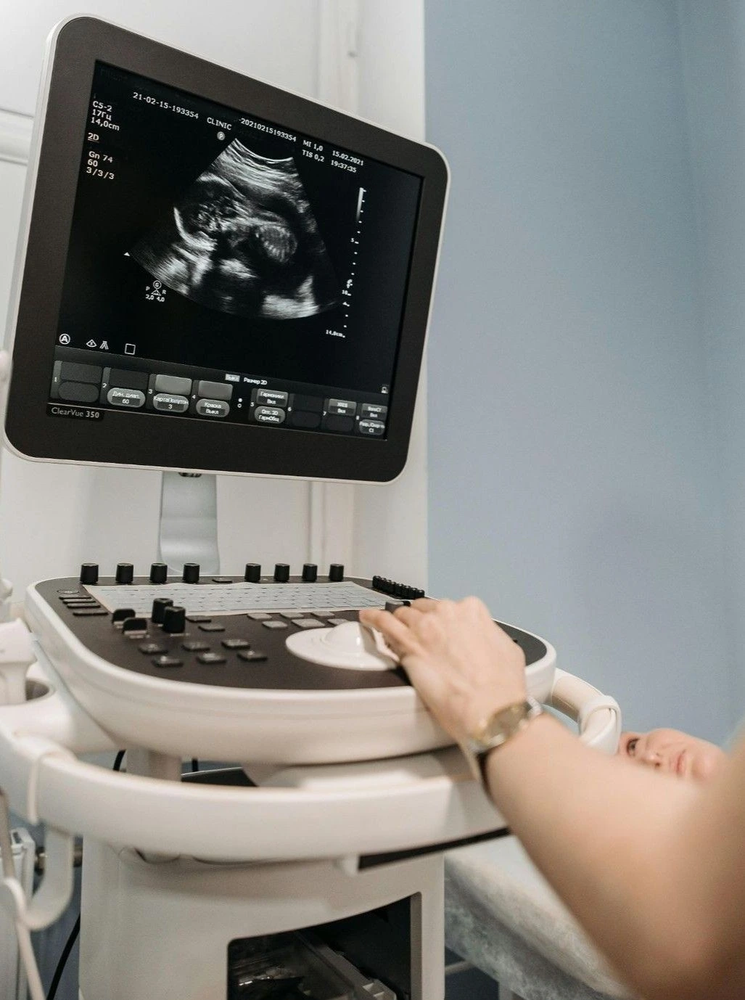

If you are pregnant and your doctor has recommended an NT scan, you are probably wondering — what exactly is an NT scan, when should I do it, and what do the results mean?
At Meera 4D Scans Madurai, we understand how important every stage of your pregnancy journey is. This complete guide will help you understand everything about the NT scan in pregnancy — so you feel confident, informed, and prepared.
What is an NT Scan?
An NT scan — short for Nuchal Translucency scan — is a specialised ultrasound scan performed during the first trimester of pregnancy, typically between 11 to 14 weeks.
The scan measures the fluid-filled space at the back of your baby's neck, known as the nuchal translucency. This measurement helps doctors assess the risk of chromosomal conditions such as Down syndrome, Edwards syndrome, and Patau syndrome.
At Meera 4D Scans Madurai, our experienced sonologists perform NT scans using high-resolution ultrasound technology — ensuring accurate measurements and reliable results for every mother and baby.
Why is the NT Scan Important?
The NT scan in pregnancy is one of the most important first-trimester screenings because:
- It provides early detection of chromosomal abnormalities
- It is safe and non-invasive — no needles or radiation
- It gives you and your doctor time to prepare and make informed decisions
- It can detect Down syndrome risk with over 99% accuracy when combined with blood tests
- It is recommended for all pregnant women, especially those above 35 years
Meera 4D Scans is Madurai's trusted centre for accurate, compassionate NT scan services — giving you clarity and peace of mind during your pregnancy.
When Should You Get an NT Scan?
The NT scan must be performed between 11 weeks and 14 weeks of pregnancy — this is the only window when the nuchal translucency can be accurately measured.
| Weeks | Recommended? |
|---|---|
| Before 11 weeks | Too early — not accurate |
| 11 – 14 weeks | Ideal window for NT scan |
| After 14 weeks | Too late — not accurate |
At Meera 4D Scans Madurai, we recommend booking your NT scan appointment as soon as you complete 11 weeks to ensure you don't miss this critical screening window.
What Does the NT Scan Measure?
During your NT scan at Meera 4D Scans, our sonologist will carefully measure:
- Nuchal Translucency (NT) — fluid at the back of baby's neck
- Crown Rump Length (CRL) — baby's length from head to bottom
- Nasal Bone — presence or absence is a key chromosomal marker
- Fetal Heart Rate — confirms baby's healthy heartbeat
- Baby's Position and Movement — overall fetal assessment

What is the Normal Range for NT Scan?
One of the most common questions mothers ask at Meera 4D Scans Madurai is — what is the normal NT scan measurement?
| NT Measurement | Interpretation |
|---|---|
| Less than 3.5mm | Normal — Low chromosomal risk |
| 3.5mm – 4.4mm | Borderline — Further tests advised |
| More than 4.5mm | High risk — Genetic counselling recommended |
Important: A higher NT measurement does not always mean a problem. Our specialist sonologists at Meera 4D Scans Madurai will explain your results clearly and guide you on the right next steps with compassion and care.
What Conditions Does NT Scan Detect?
The NT scan in pregnancy at Meera 4D Scans screens for the following chromosomal conditions:
- Down Syndrome (Trisomy 21) — Extra chromosome 21
- Edwards Syndrome (Trisomy 18) — Extra chromosome 18
- Patau Syndrome (Trisomy 13) — Extra chromosome 13
- Congenital Heart Defects — Structural heart abnormalities
- Neural Tube Defects — Brain and spinal cord conditions
At Meera 4D Scans, we combine the NT measurement with your maternal blood test results to give you the most accurate risk assessment possible.
Is the NT Scan Safe for My Baby?
Yes — the NT scan is completely safe for both mother and baby.
- Uses sound waves only — absolutely no radiation
- Non-invasive — no needles or injections
- Takes only 20 to 30 minutes
- No side effects for mother or baby
- Recommended by doctors worldwide
At Meera 4D Scans Madurai, your baby's safety and your comfort are our top priorities. Every NT scan is performed in a calm, caring environment.
What Happens During Your NT Scan at Meera 4D Scans?
When you visit Meera 4D Scans Madurai for your NT scan, here is what to expect:
Arrival & Registration
You arrive at our centre and complete a simple, quick registration process.
Preparation
You may be asked to have a full bladder for better imaging. Our friendly staff will guide you.
The Scan
You lie comfortably. Our sonologist applies gel on your abdomen and uses an ultrasound probe to capture clear images of your baby.
Measurements
NT measurement, nasal bone, fetal heart rate, and CRL are carefully measured and recorded by our expert team.
Same Day Results
At Meera 4D Scans, you receive your detailed scan report on the same day with compassionate guidance from our specialists.
Why Choose Meera 4D Scans Madurai for Your NT Scan?
Meera 4D Scans is Madurai's most trusted pregnancy scan centre. Here's why thousands of mothers choose Meera 4D Scans Madurai:
- Experienced certified sonologists with years of expertise
- High-resolution 4D ultrasound technology for accurate measurements
- Same day detailed reports — no waiting
- Compassionate, patient-centred care for every mother
- Affordable pricing with no compromise on quality
- 10,000+ happy mothers trust Meera 4D Scans Madurai
Useful Resources
These trusted health and medical resources provide additional information about NT scan, nuchal translucency screening, and pregnancy care.
-
WHO — Maternal Health World Health Organization guidelines on maternal and pregnancy health care.
-
National Health Portal India — Pregnancy Care India's official health portal guidance on antenatal care and pregnancy health.
-
NCBI — Nuchal Translucency Screening Research Peer-reviewed research on nuchal translucency and chromosomal abnormality screening.